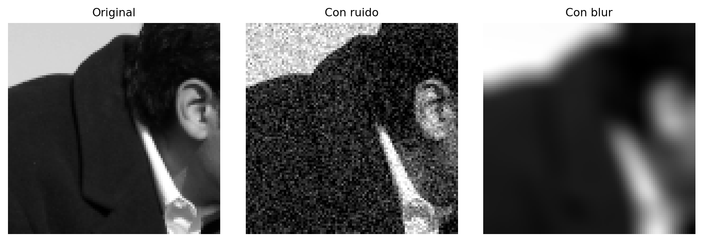
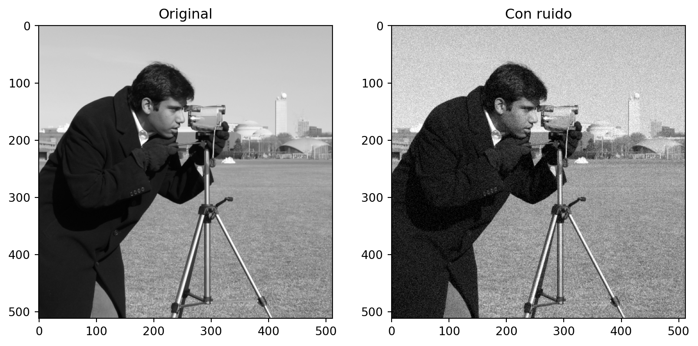
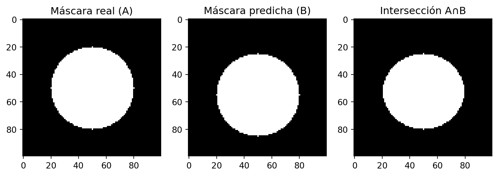
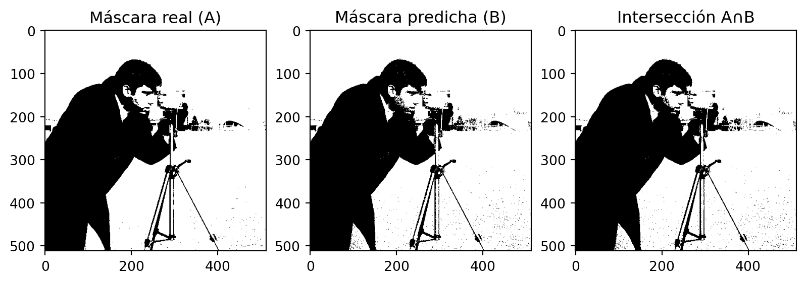
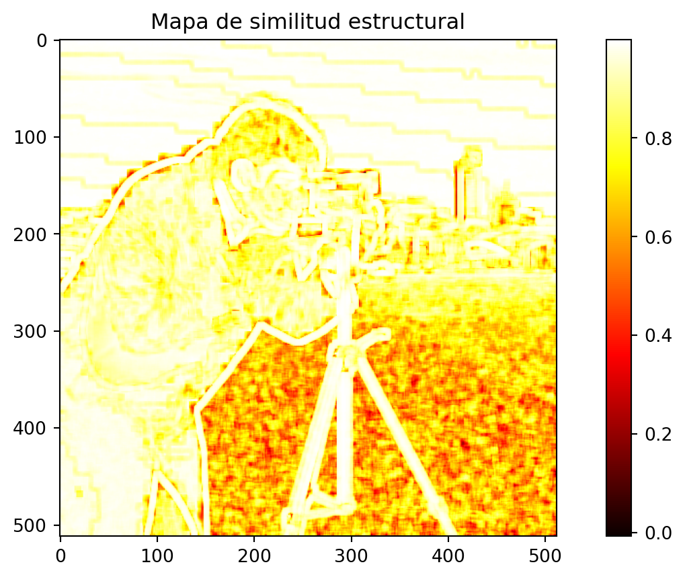
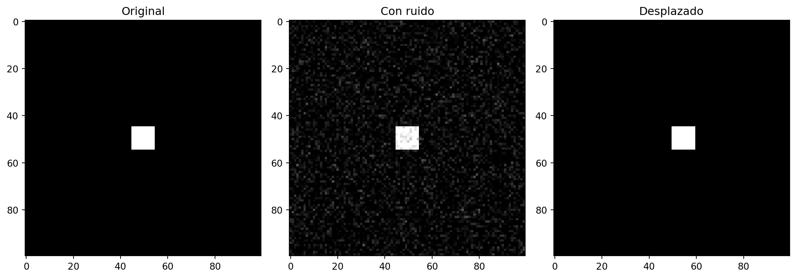
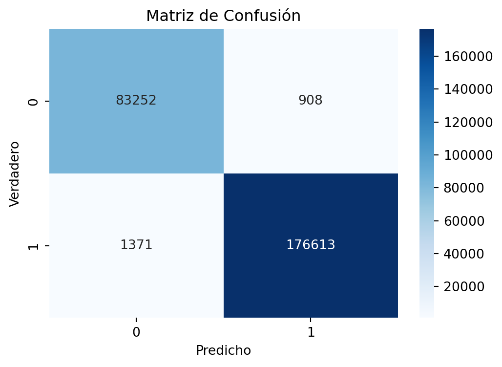

Una revisión de las métricas aplicadas en el procesamiento de imágenes
Con ejemplos en Python
Curso Tratamiento Digital de Imágenes
2026-02-09
Agenda
- Introducción a métricas de calidad
- Métricas matemáticas básicas (MSE, PSNR)
- Métricas perceptuales (SSIM)
- Métricas para segmentación
- Comparación práctica
- Conclusiones y recomendaciones
Introducción
¿Por qué métricas?
- Evaluar objetivamente la calidad de imagen
- Comparar diferentes algoritmos de procesamiento
- Optimizar parámetros de procesamiento
- Control de calidad automático
Tipos principales:
- Sin referencia: evalúan calidad absoluta
- Con referencia: comparan con imagen original
- La calidad de imagen después del procesamiento se evalúa mediante métricas cuantitativas.
- Dos grandes enfoques:
- Métricas matemáticas: MSE, PSNR.
- Métricas perceptuales: inspiradas en el sistema visual humano (SSIM).
- Métricas matemáticas: MSE, PSNR.
- También se usan métricas en tareas específicas como segmentación.
Ejemplo base en Python

MSE: 0.002414
PSNR: 26.17 dBCompresión: Métricas clásicas
Error Cuadrático Medio (MSE)
\[ MSE = \frac{1}{MN}\sum_{x=1}^M \sum_{y=1}^N [I(x,y) - I'(x,y)]^2 \]
- Definición: mide la diferencia promedio al cuadrado entre la imagen original \(I(x,y)\) y la procesada \(I'(x,y)\).
- M, N: dimensiones de la imagen.
- Un valor de MSE = 0 significa que ambas imágenes son idénticas.
Interpretación
- MSE evalúa el error absoluto, pero no considera cómo lo percibe el ojo humano.
- Valores más bajos → imágenes más parecidas.
- Valores más altos → mayor diferencia entre original y procesada.
Rangos típicos (8 bits, escala de 0–255)
- 0 – 100 → diferencias imperceptibles o mínimas.
- 100 – 1000 → diferencias visibles pero moderadas.
- > 1000 → diferencias notables, degradación fuerte.
Nota: el rango depende del tamaño y tipo de imagen, por lo que se suele reportar junto con PSNR para una mejor interpretación.
Proporción Señal-Ruido Pico (PSNR)
\[ PSNR = 10 \cdot \log_{10}\left(\frac{(maxI)^2}{MSE}\right) \]
- Definición: mide la relación entre la señal máxima de la imagen y el ruido introducido por el procesamiento (compresión, transmisión, etc.).
- maxI: intensidad máxima posible de un píxel (255 en imágenes de 8 bits).
- MSE: error cuadrático medio entre la imagen original y la reconstruida.
Interpretación
- Valores más altos de PSNR → mejor calidad (menos ruido/distorsión).
- Valores bajos de PSNR → mayor degradación visual.
Rangos típicos
- > 40 dB → calidad excelente, casi indistinguible del original.
- 30–40 dB → calidad buena, diferencias leves.
- 20–30 dB → calidad aceptable pero con artefactos visibles.
- < 20 dB → calidad pobre, distorsión severa.
Ejemplo: Compresión JPEG
Métricas para compresión JPEG:
MSE: 0.000947
PSNR: 30.24 dBSegmentación: Métricas (ejemplo)
Coeficiente de Jaccard
\[ J(A,B) = \frac{|A \cap B|}{|A \cup B|} \]
- Definición: mide la similitud entre dos conjuntos de píxeles:
- \(A\): máscara de referencia (segmentación “real” o ground truth).
- \(B\): máscara obtenida por el algoritmo de segmentación.
- \(A\): máscara de referencia (segmentación “real” o ground truth).
- Rango: \(0 \leq J(A,B) \leq 1\).
Interpretación
- J = 1 → las dos máscaras son idénticas (segmentación perfecta).
- J cercano a 0 → muy poca coincidencia entre predicción y referencia.
- Valores intermedios indican el grado de solapamiento.
Usos típicos
- Evaluación de segmentación médica (órganos, tumores).
- Comparación de detección de objetos en imágenes satelitales.
- Validación de algoritmos de visión por computadora.
Ejemplo práctico: Coeficiente de Jaccard
Coeficiente de Jaccard: 0.809493264913406

Coeficiente de Jaccard: 0.9873Calidad perceptual: SSIM
Structural Similarity Index (SSIM)
\[ SSIM(x,y) = \frac{(2\mu_x\mu_y + c_1)(2\sigma_{xy} + c_2)}{(\mu_x^2 + \mu_y^2 + c_1)(\sigma_x^2 + \sigma_y^2 + c_2)} \]
- Definición: mide la similitud perceptual entre dos imágenes, considerando:
- Luminancia (brillo promedio).
- Contraste (desviación estándar).
- Estructura (correlación local).
- Luminancia (brillo promedio).
Interpretación
- Rango: \(-1 \leq SSIM \leq 1\)
- \(SSIM = 1\) → imágenes idénticas.
- \(SSIM \approx 0\) → baja similitud estructural.
- A diferencia de \(MSE\) y \(PSNR\), \(SSIM\) se correlaciona mejor con la percepción humana.
Ejmplo práctico calidad perceptual: SSIM
Calidad perceptual entre original y jpeg
np.float64(0.8545161159906695)
Limitaciones del MSE y PSNR
MSE ruido: 0.004970
MSE desplazamiento: 0.010000
Observación:
- \(MSE\) valores similares en ambas imágenes.
- Sin embargo, la percepción es muy distinta:
- Con ruido → el objeto se reconoce bien.
- Desplazado → el objeto cambia completamente de posición.
- Conclusión: \(MSE\) y \(PSNR\) no siempre reflejan la calidad perceptual.
Métricas de Segmentación
Segmentación: Matriz de confusión
Definición: tabla que resume los resultados de un clasificador (o segmentación) comparando etiquetas reales (\(y_{true}\)) contra las predichas (\(y_{pred}\)).
Estructura
| Predicho Positivo | Predicho Negativo | |
|---|---|---|
| Verdadero Positivo (TP) | píxeles de objeto correctamente detectados | |
| Verdadero Negativo (TN) | píxeles de fondo correctamente detectados | |
| Falso Positivo (FP) | píxeles clasificados como objeto pero que eran fondo | |
| Falso Negativo (FN) | píxeles de objeto que el algoritmo no detectó |
Métricas derivadas
Precisión:
\[ Precision = \frac{TP}{TP+FP} \]
(qué tan confiables son las detecciones positivas).
Recall / Sensibilidad:
\[ Recall = \frac{TP}{TP+FN} \]
(qué tanto detectamos de lo que realmente había).
F1-Score: media armónica entre Precisión y Recall.
Matriz de confusión

Precisión: 0.9949
Sensibilidad (Recall): 0.9923
F1-Score: 0.9936Comparación de Métricas
Degradación MSE PSNR (dB) SSIM
Ruido Gaussiano 0.0024 26.1720 0.5212
JPEG Q=20 0.0009 30.2380 0.8545
Blur 0.0050 22.9801 0.6454Interpretación:
- PSNR > 30 dB: Buena calidad
- SSIM > 0.9: Muy similar estructuralmente
- MSE < 0.01: Diferencia baja (en rango [0,1])
Recomendaciones Prácticas
Por tarea:
Compresión de imágenes:
- PSNR para comparación rápida
- SSIM para calidad perceptual
Restauración de imágenes:
- SSIM (correlaciona mejor con percepción)
- MSE para optimización
Segmentación:
- IoU (Jaccard) para detección de objetos
- F1-Score para clasificación píxel a píxel
Limitaciones:
- MSE/PSNR: No consideran estructura visual
- SSIM: Computacionalmente más costoso
- Métricas de segmentación: Sensibles a desbalance de clases
Buenas prácticas:
- Usar múltiples métricas
- Validar con evaluación humana
- Considerar el contexto de la aplicación
Referencias y Recursos
Papers fundamentales:
- Wang et al. (2004): “Image quality assessment: from error visibility to structural similarity”
- Sheikh & Bovik (2006): “Image information and visual quality”
Librerías útiles:
- scikit-image: métricas básicas
- pytorch-fid: para deep learning

Métricas en Procesamiento de Imágenes